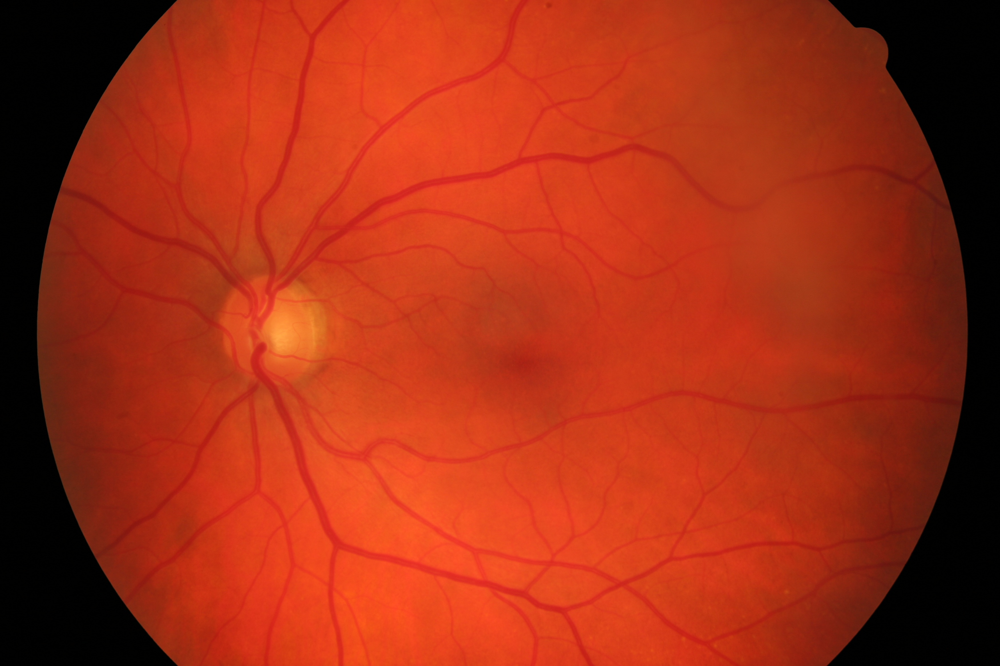
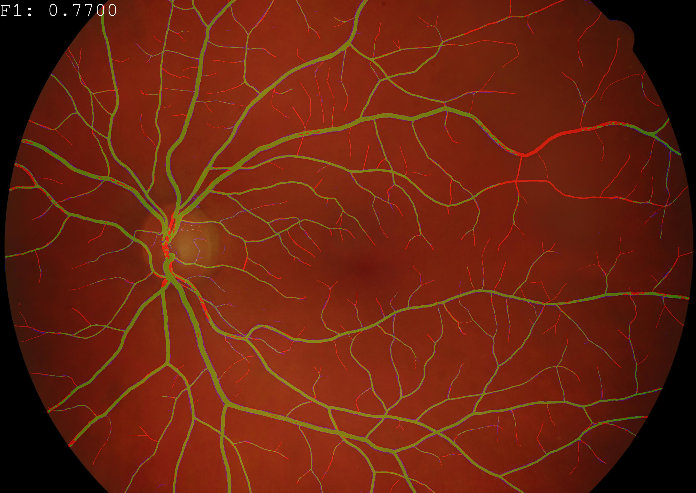

Semantical Segmentation: Retinography
Posted on Wed 14 April 2021 in research
 
Predicted vessel maps vs. ground truths for a DL model evaluated on the high-resolution HRF test-set. True positives, false positives and false negatives are displayed in green, blue and red respectively.
Reproducibility Checklist
- All datasets used in this study are public
- Software is open-source, extensible and tested on a regular basis
- Complete documentation is available
Partnership
Part of this study was conducted in partnership with the Department of Ophthalmology at University Hospital of Grenoble Alpes.
Since the introduction of U-Nets in 2015, the field of medical image segmentation has seen renewed interest bringing in a variety of fully convolutional (deep) neural network (FCN) architectures for binary and multi-class segmentation problems promising very attractive results, with applications in computed tomography, retinography, and histopathology to cite a few. Despite the incredible progress, the lack of annotated images (due to cost), and rigor in the comparison of trained models has led to the conclusion larger and more dense network models provide more accurate results for this task. This is particularly noticeable in ophtalmological images such as those from bi-dimensional eye fundus photography (retinography). While retinography is not used for precision diagnostics, it remains relatively cheap and very effective means for mass screening. Semantical segmentation of eye fundus structures plays a key role in this process.
We tried to address these gaps in two different ways. The first (Laibacher and Anjos, 2019) was to conduct and publish rigorous (open source, reproducible) benchmarks with popular retinography datasets and state-of-the-art FCN models in which we: i) showed that simple transformation techniques like rescaling, padding and cropping of combined lower-resolution source datasets to the resolution and spatial composition of a higher-resolution target dataset can be a surprisingly effective way to improve segmentation quality in unseen conditions; ii) we proposed a set of plots and metrics that give additional insights into model performance and demonstrated via tables and plots how to take advantage of that information, throwing a new light over some published benchmarks. We argue the performance of many contributions available in literature is actually quite comparable within standard deviation margins of each other, in spite of huge differences in the number of parameters for different architectures. Finally, we made our findings reproducible, distributing code and documentation for future researchers to build upon, in the hopes to inspire future work in the field.
In a second contribution (Galdran et al., 2020) we propose that a minimalistic version of a standard U-Net with 3 orders of magnitude less parameters, carefully trained and rigorously evaluated, closely approximates the state-of-the-art performance in vessel segmentation for retinography. In addition, we propose a simple extension, dubbed W-Net, by concatenating two U-Nets together, which reaches outstanding performance on several popular datasets, still using orders of magnitude less learnable weights than any previously published approach. This work also provide a very comprehensive intra and cross-dataset performance analysis, involving up to 10 different databases, including artery/vein multi-class semantic segmentation.
Bibliography
Adrian Galdran, André Anjos, José Dolz, Hadi Chakor, Hervé Lombaert, and Ismail Ben Ayed. The little w-net that could: state-of-the-art retinal vessel segmentation with minimalistic models. September 2020. URL: https://arxiv.org/abs/2009.01907, arXiv:2009.01907. ↩
Tim Laibacher and André Anjos. On the evaluation and real-world usage scenarios of deep vessel segmentation for retinography. September 2019. URL: https://arxiv.org/abs/1909.03856, arXiv:1909.03856. ↩